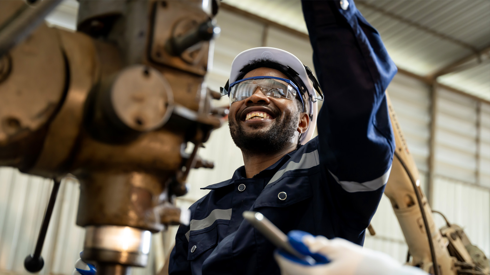

Workforce & Capability Solutions
Skilled labour readiness for energy, rare earth, and critical minerals.

Pebble Canada delivers workforce and capability solutions supporting the Canadian energy sector and the rare earth and critical minerals value chain. We enable skilled labour readiness and operational capacity in high compliance, remote, and project driven environments.
Energy and Critical Minerals Workforce Readiness
We support workforce planning and deployment across extraction, processing, logistics, and supporting infrastructure. Our approach aligns skills, roles, and readiness with operational requirements and Canadian expectations for safety, compliance, and performance.
Skilled labour deployment
Deployment models that support project execution and ongoing operations, including remote and rotational environments.
Workforce planning
Role planning and capability alignment to support productivity, safety, and reliability through the project lifecycle.
Safety and compliance
Workforce support shaped by Canadian regulatory, safety, and site standards appropriate for energy and resource operations.
Critical minerals capability
Support for workforce capacity across strategic resource supply chains including rare earth minerals and critical minerals projects.
International Workforce Delivery Capability
Pebble Canada extends its workforce delivery capability across international corridors through specialist partnerships with over three decades of operational experience in energy, construction, and resource sector deployment. This capability supports Canadian-led projects requiring skilled and semi-skilled labour at scale, across a broad range of trade categories and operational environments.
Through established delivery partnerships, Pebble Canada provides access to an active candidate database of over 13,000 vetted professionals across skilled and semi-skilled trade categories, with delivery pipelines spanning South Asia, the Middle East, and North Africa. The underlying recruitment infrastructure is built around compliance, credential verification, and rapid mobilization — aligned with the operational standards that Canadian energy and resource projects require.
Energy sector workforce programs
Workforce mobilization for gas transmission, power generation, and downstream energy infrastructure, including operations, maintenance, and technical support roles across project and operational phases.
Construction and civil infrastructure
Labour supply for large-scale civil, structural, and mechanical construction programs, covering a broad range of certified trades from rigging and welding to instrumentation and heavy equipment operation.
Mining and resource extraction
Skilled workforce support for mineral extraction, processing, and site operations — including roles across subsurface, surface, and logistics functions in remote and technically demanding environments.
International corridor delivery
End-to-end workforce coordination for projects operating across multiple jurisdictions, with compliance, mobilization, and documentation support aligned to international labour and immigration requirements.
Offshore Subcontract Workforce Model
Pebble Canada also provides offshore subcontract workforce solutions designed to support Canadian energy, infrastructure, and critical minerals projects through scalable and compliant labour supply. Our model enables clients to access qualified personnel efficiently while maintaining operational control, safety standards, and regulatory compliance.
We work alongside prime contractors and workforce partners to supply pre vetted, certified, and deployment ready personnel across a range of operational roles. This approach allows organisations to respond quickly to project demand, seasonal surges, and specialised skill requirements without increasing long term fixed overhead.
Subcontract workforce deployment
Flexible subcontract staffing models supporting short term, rotational, and long term project needs across energy and resource operations.
Recruitment and vetting
Workforce screening, credential verification, and compliance checks aligned with Canadian safety, labour, and site requirements.
Remote and high compliance readiness
Personnel prepared for remote, industrial, and high compliance environments, including rotation based deployments and site specific standards.
Workforce management support
Mobilisation coordination, readiness planning, and ongoing workforce support to ensure continuity, performance, and alignment with project objectives.